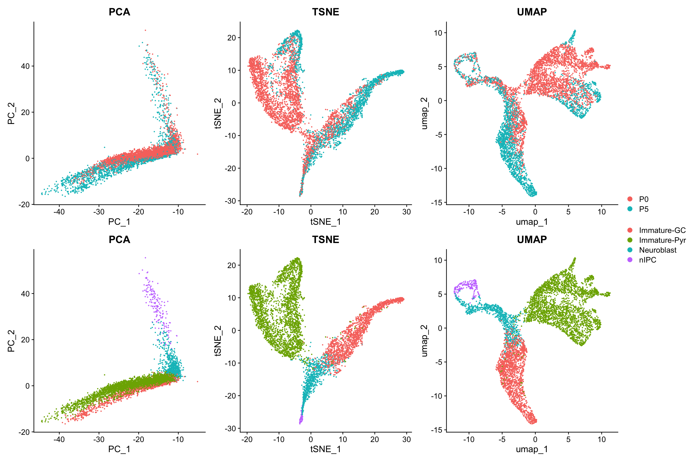
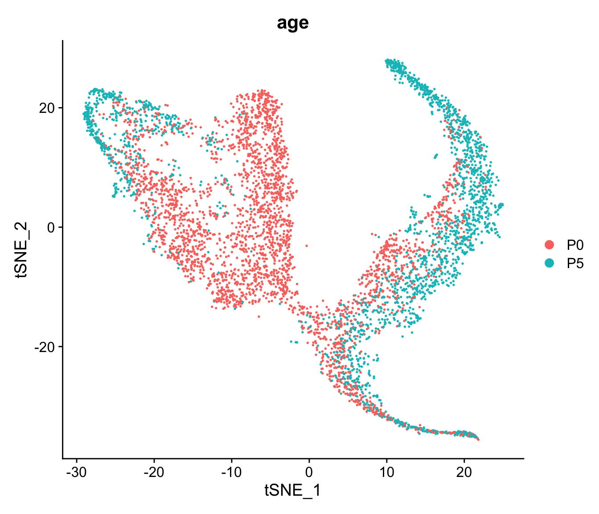
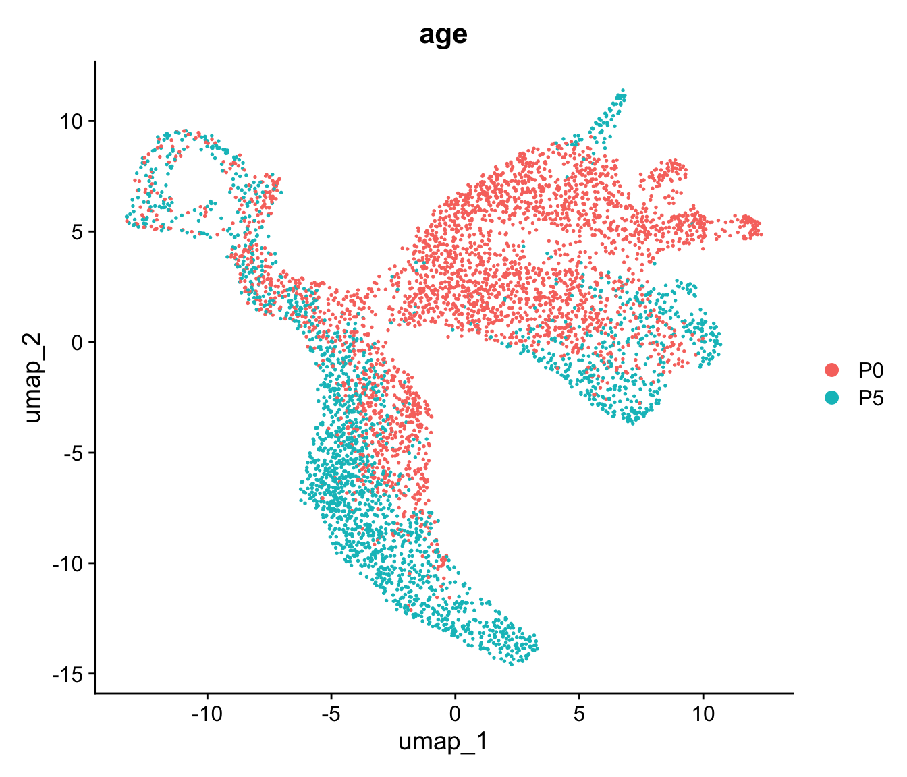
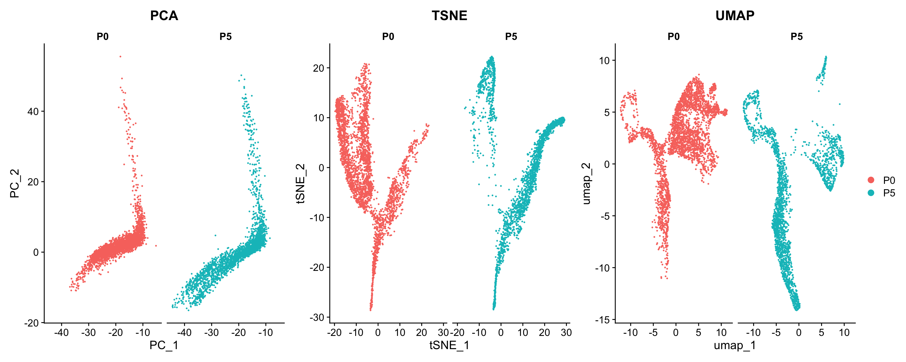
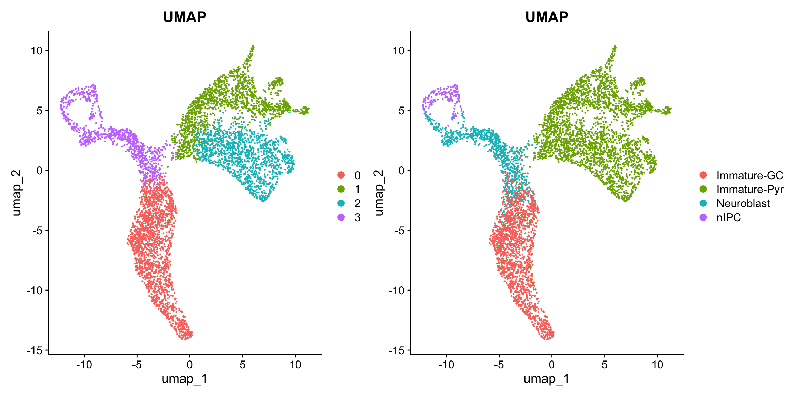
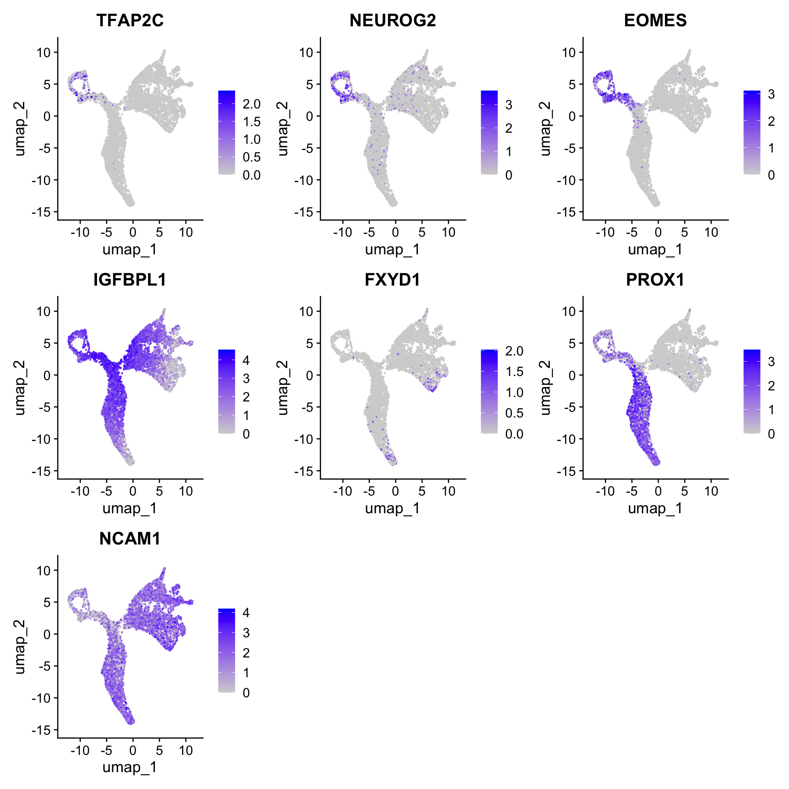
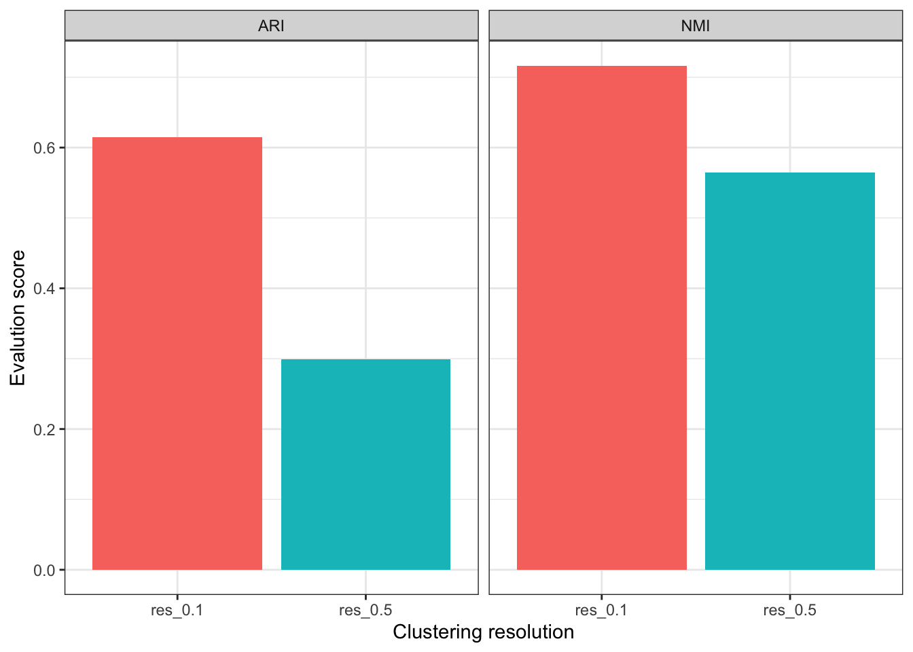
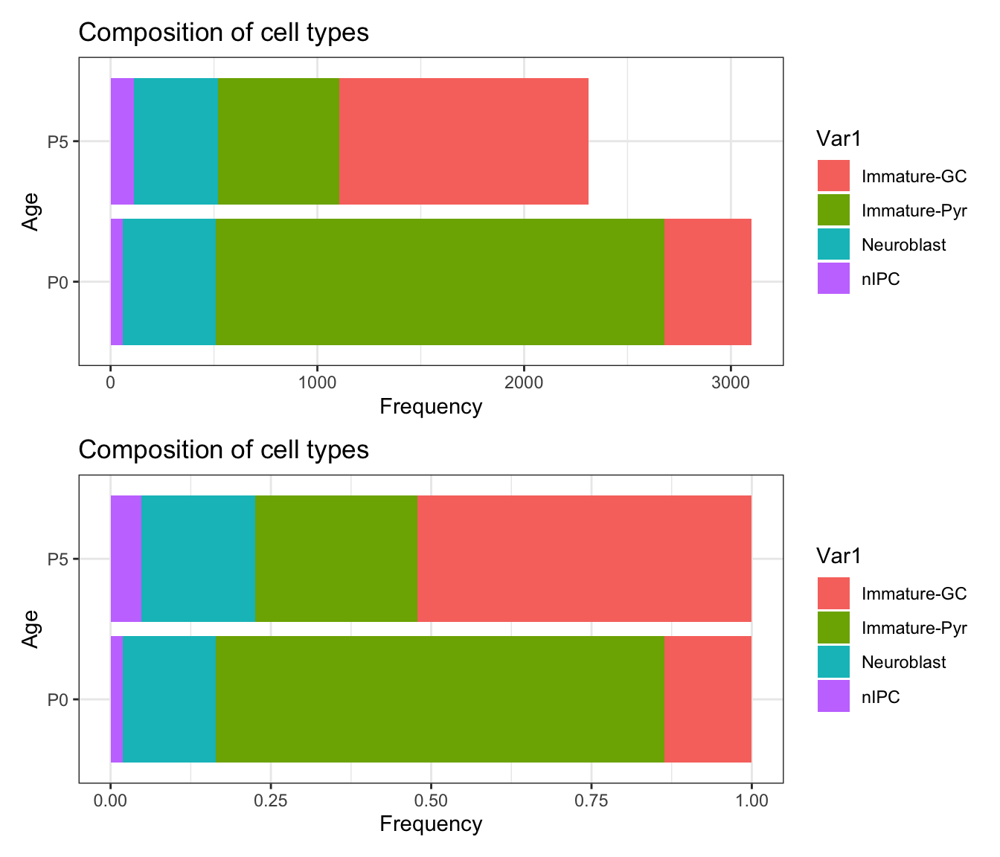
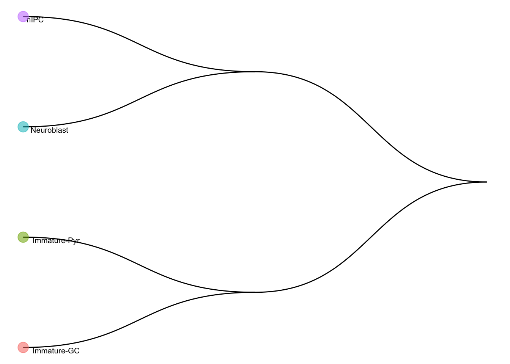
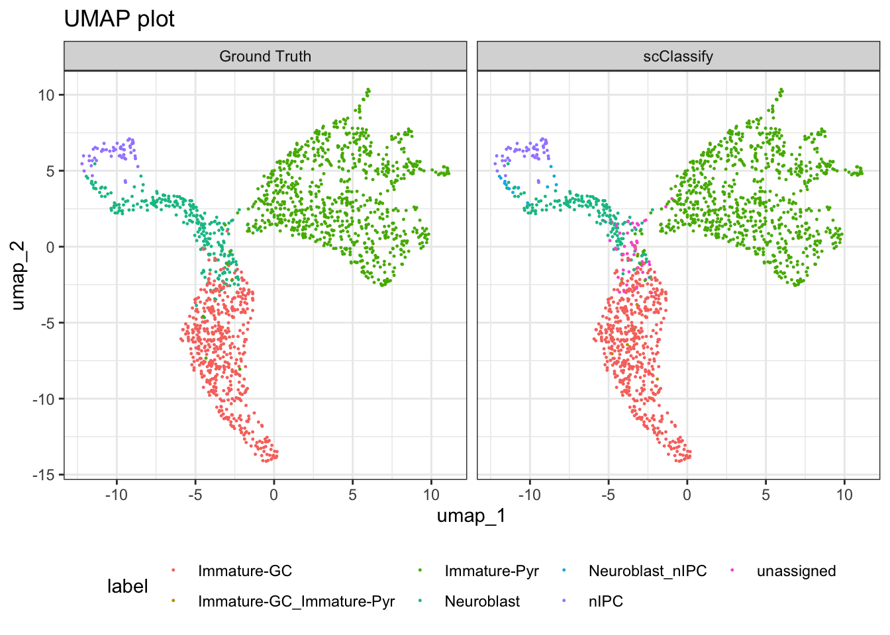

Basics of Single-cell Annotation
Carissa Chen1 Sharon Long2
Source:vignettes/basics_of_single-cell_annotation.Rmd
basics_of_single-cell_annotation.RmdOverview
Description
Single-cell annotation is the key step in scRNA-seq analysis to reveal the heterogeneity present in the data for further downstream analyses to characterise the specific cell type differences. In this section of the workshop, we will explore both unsupervised and supervised techniques for cell type identification, leveraging tools such as clustering algorithms, marker gene annotation, and machine learning classifiers. The learning goals of this section is to understand the different ways cell type annotation can be performed and under which scenarios it is more preferable to use either approach.
Preparation and assumed knowledge
Learning objectives
- Apply different dimensionality reduction techniques and customise the visualisation
- To perform unsupervised and supervised procedures to annotate cell types in scRNA-seq data
- Think critically about the disadvantages and advantages of each approach
Introduction
We have now preprocessed our single cell data. The next step is to analyse the data for cell type identification, identification of marker genes and et cetera.
We will focus on some simple steps of downstream analysis for single cell RNA-sequencing (scRNA-seq) data as shown below.
- What are the cell types present in the dataset?
- What are these cell clusters?
- For a gene of interest, how can I visualise the gene expression distribution?
- What are the cell type composition in the data?
Two common approaches are used - unsupervised clustering and manual annotation using marker genes, and annotation by supervised classification.
Unsupervised clustering is a method that groups cells into clusters based on their gene expression profiles without prior knowledge of the cell types. The goal is to identify groupings of cells with similar transcriptomic profiles which correspond to a single cell type. After clustering, the resulting groupings are annotated by using known marker genes that are highly expressed in specific cell types, serving as a defining signature of a cell type. Alternatively, differential gene analysis can be performed on the clusters to determine a selection of top genes that are related to specific cell types to annotate the cluster.
If there is an appropriate reference single-cell dataset, we can opt to use a supervised classification algorithm to classify our cells. Typically, the classification model is trained on a labeled dataset, where it learns the relationships between cell types and gene expression profiles. Then, the trained model is applied on a new, unlabeled dataset to predict the cell type based on prior gene expression information.
In this tutorial we will explore an example of the typical
unsupervised annotation method using Seurat, and then
demonstrate the usage of a supervised classification using
scClassify.
Loading libraries and the data
library(SingleCellExperiment)
library(ggthemes)
library(ggpubr)
library(ggplot2)
library(reshape2)
library(patchwork)
library(scater)
library(scran)
library(Seurat)
library(ggrastr)
library(tidyverse)
library(mclust)
library(presto)
library(DT)
library(igraph)
theme_set(theme_bw())
load(file="../data/hippocampus_processed.rda")
sce <- hippocampus_processed
rm(hippocampus_processed)To simplify our data, we will only take two time points and to simplify the data, we will only take the continuous cell types which will be helpful for the next part of the workshop.
sce <- sce[, sce$age %in% c("P0", "P5")]
keep <- c("Immature-GC", "Immature-Pyr", "Neuroblast", "nIPC")
sce <- sce[, sce$cell_cluster %in% keep]
convert_to_seurat <- function(sce, meta = TRUE, ...) {
drops <- rownames(sce)
if (meta)
meta.data <- colData(sce)
else meta.data <- NULL
counts <- counts(sce)[drops, ,drop = FALSE]
seur <- Seurat::CreateSeuratObject(counts = counts, meta.data = as.data.frame(meta.data))
return(seur)
}
seu <- convert_to_seurat(sce)Data visualisation using dimensionality reduction
Data normalisation and scaling
In RNA-seq data, there are often genes that are expressed at extreme magnitudes, and the variance often skews the distribution of the data. As many statistical methods often assume an approximately normal distribution, log normalisation of the data is a crucial step to stabilise the variance in our data and make it more interpretable.
After log normalisation of the data, the next step is to find highly variable genes (HVGs). As the feature space is large, we often perform this step to detect crucial genes that contribute to the cell-cell variation in scRNA-seq. Not only does this help narrow down the feature space to include biologically informative genes, it will also help decrease the computational time of downstream analyses.
seu <- Seurat::NormalizeData(seu, normalization.method = "LogNormalize", scale.factor = 10000)
seu <- Seurat::FindVariableFeatures(seu, selection.method = "vst")
seu <- Seurat::ScaleData(seu, verbose = FALSE, do.scale = TRUE, do.center = FALSE)Performing dimensionality reduction
Principal Component Analysis (PCA) is a statistical technique to transform high dimensionality data into low dimensionality data whilst retaining the variability of the data into Principal Components (PCs). It is typically performed prior to running any other dimensionality reduction technique as algorithms such as t-SNE and UMAP are computationally intensive, this reduces the computational load and memory required whilst optimizing the performance.
seu <- Seurat::RunPCA(seu, verbose = FALSE)
seu <- Seurat::RunTSNE(seu, reduction = "pca", perplexity=200)
seu <- Seurat::RunUMAP(seu, reduction = "pca", dims = 1:15, min.dist = 0.5)We will visualise the data using the three dimensionality reduction approaches above and color the individual data points (denoting single cells) by their provided cell type labels. Without much knowledge of the biological system, can you guess whether we have discrete or continuous cell types? What can you infer about the lineages?
p1 <- DimPlot(seu, reduction = "pca", group.by = "age") + ggtitle("PCA")
p2 <- DimPlot(seu, reduction = "tsne", group.by = "age") + ggtitle("TSNE")
p3 <- DimPlot(seu, reduction = "umap", group.by = "age") + ggtitle("UMAP")
p4 <- DimPlot(seu, reduction = "pca", group.by = "cell_cluster") + ggtitle("PCA")
p5 <- DimPlot(seu, reduction = "tsne", group.by = "cell_cluster") + ggtitle("TSNE")
p6 <- DimPlot(seu, reduction = "umap", group.by = "cell_cluster") + ggtitle("UMAP")
patchwork::wrap_plots(list(p1, p2, p3, p4, p5, p6), nrow=2, guides="collect")
Exercises:
- What happens to the visualisations when you change the TSNE perplexity parameter?
- What happens to the visualisations when you change the UMAP min.dist parameter?
tmp <- Seurat::RunTSNE(seu, reduction = "pca", reduction.name = "tsne", perplexity=100)
DimPlot(tmp, reduction = "tsne", group.by = "age")
tmp <- Seurat::RunUMAP(seu, reduction = "pca", reduction.name = "umap", dims = 1:15, min.dist = 0.7)
DimPlot(tmp, reduction = "umap", group.by = "age")
Unsupervised clustering and annotation of scRNA-seq data
There may not always be a suitable reference dataset for your single-cell RNA-seq experiment, therefore we need to start by first identifying how many distinct groups of populations we can find from our data. One common method to achieve this is a statistical technique called clustering. A clustering method will group similar samples (cells) together and partition samples that are different by comparing their feature information (gene expression).
How many clusters do I have in my data?
We will cluster the cells using the Seurat implementation of louvain clustering. When we separately visualise the cells by time, we see the cells overlap regardless of which timepoint they belong to, therefore we will cluster the data together.
p1 <- DimPlot(seu, reduction = "pca", group.by = "age", split.by = "age") + ggtitle("PCA")
p2 <- DimPlot(seu, reduction = "tsne", group.by = "age", split.by = "age") + ggtitle("TSNE")
p3 <- DimPlot(seu, reduction = "umap", group.by = "age", split.by = "age") + ggtitle("UMAP")
patchwork::wrap_plots(list(p1, p2, p3), nrow=1, guides="collect")
Since we know the number of cell types expected, for the purpose of this tutorial, we will set a resolution parameter that gives us a similar number of clusters equal to unique cell types.
Discussion:
- What does the resolution parameter do?
- How do we choose the right resolution?
seu <- Seurat::FindNeighbors(seu, dims = 1:10)
seu <- Seurat::FindClusters(seu, resolution = 0.1)
#> Modularity Optimizer version 1.3.0 by Ludo Waltman and Nees Jan van Eck
#>
#> Number of nodes: 5412
#> Number of edges: 178258
#>
#> Running Louvain algorithm...
#> Maximum modularity in 10 random starts: 0.9560
#> Number of communities: 4
#> Elapsed time: 0 secondsFor a gene of interest, how can I visualise the gene expression distribution?
Then, once we have generated the unique clusters, we can annotate the data using known marker genes.
Discussion:
- How do you think the unsupervised clustering performed?
p1 <- DimPlot(seu, reduction = "umap", group.by = "RNA_snn_res.0.1") + ggtitle("UMAP")
p2 <- DimPlot(seu, reduction = "umap", group.by = "cell_cluster") + ggtitle("UMAP")
p1 + p2
Here are some known marker genes of the cell types we expect in the data:
- nIPCs: Neurog2, Tfap2c
- Neuroblast: Eomes, Igfbpl1
- Immature Granule Cell (GC): Prox1, Fxyd7
- Immature Pyramidal Cell (Pyr): Ncam1
Feel free to visualise different marker genes to visualise the distribution of the gene expression across cells.
Discussion:
- What parameter would you change in
FeaturePlotto view the data by age? - Do you think these marker genes are informative to identify the specific cell types?
markers = c("TFAP2C", "NEUROG2", "EOMES", "IGFBPL1", "FXYD1", "PROX1", "NCAM1")
FeaturePlot(seu, features = markers, reduction = "umap", pt.size = 0.2)
Alternatively, we can use the cluster assignments and perform differential expression analysis to find differential genes between clusters to define cell types. Lets use it to see if we can find markers for the immature pyramidal cells.
As this step takes a few minutes, we can load in the pre-calculated results.
if(!file.exists("../data/cluster1.markers_RNA_snn_res.0.1.rda")) {
cluster1.markers <- FindMarkers(seu, ident.1 = 1, test.use = "wilcox", min.pct=0.01)
save(cluster1.markers, file="data/cluster1.markers_RNA_snn_res.0.1.rda")
} else {
load(file="../data/cluster1.markers_RNA_snn_res.0.1.rda")
cluster1.markers <- cluster1.markers_RNA_snn_res.0.1
}
pos_only <- cluster1.markers %>%
dplyr::filter(avg_log2FC > 1)Discussion:
- What do the top markers tell you about the identity of this cluster?
# fill in the code to visualise the new marker genes obtained from the DE analysis.[Optional] We can evaluate the clustering performance using the cell type labels provided from the publications.
seu <- Seurat::FindClusters(seu, resolution = 0.5) # compare with a different resolution
#> Modularity Optimizer version 1.3.0 by Ludo Waltman and Nees Jan van Eck
#>
#> Number of nodes: 5412
#> Number of edges: 178258
#>
#> Running Louvain algorithm...
#> Maximum modularity in 10 random starts: 0.8966
#> Number of communities: 11
#> Elapsed time: 0 seconds
# ARI
ari = c(mclust::adjustedRandIndex(seu$cell_cluster, seu$RNA_snn_res.0.1),
mclust::adjustedRandIndex(seu$cell_cluster, seu$RNA_snn_res.0.5))
# NMI
nmi = c(igraph::compare(as.numeric(factor(seu$cell_cluster)),
seu$RNA_snn_res.0.1, method = "nmi"),
igraph::compare(as.numeric(factor(seu$cell_cluster)),
seu$RNA_snn_res.0.5, method = "nmi"))
plot_data = data.frame(
res = rep(c("res_0.1", "res_0.5"), 2),
value = c(ari, nmi),
eval = rep(c("ARI", "NMI"), each = 2)
)
ggplot(plot_data, aes(x = res, y = value, fill = res)) +
geom_bar(stat="identity") +
facet_grid(col = vars(eval)) +
labs(x = "Clustering resolution",
y = "Evalution score") +
theme(legend.position = "none")
Discussion:
- What are additional visualisations can we use to determine the annotations by marker gene expression?
What is the cell type composition of my data?
Once we have identified the cell types, often it is of interest to visualise the cell type proportions across conditions (ie. age).
Discussion:
- Why is it useful to visualise both the absolute counts and the proportions?
plot_data <- data.frame(table(seu$cell_cluster, seu$age))
p1 <- ggplot(plot_data,
aes(x = Var2,
y = Freq,
fill = Var1)) +
geom_bar(stat = "identity") +
labs(x = "Age",
y = "Frequency",
title = "Composition of cell types") +
coord_flip()
p2 <- ggplot(plot_data,
aes(x = Var2,
y = Freq,
fill = Var1)) +
geom_bar(position="fill", stat="identity") +
labs(x = "Age",
y = "Frequency",
title = "Composition of cell types") +
coord_flip()
p1 / p2
Perform cell classification with scClassify
To take advantage of the large collection of well-annotated scRNA-seq
datasets, the scClassify package implements a set of
methods to perform accurate cell type classification based on ensemble
learning and sample size calculation. More details can be viewed from
the original paper
The code below shows an example how to utilise a subset of data as reference data and then classify on the remaining data.
set.seed(2023)
# subsample 70% of the data as training dataset, and rest as test
idx <- sample(ncol(seu), round(ncol(seu)*0.7))
train <- Seurat::GetAssayData(seu, layer="data")[, idx]
test <- Seurat::GetAssayData(seu, layer="data")[, -idx]
cellTypes_train <- seu$cell_cluster[idx]
cellTypes_test <- seu$cell_cluster[-idx]
table(cellTypes_train)
#> cellTypes_train
#> Immature-GC Immature-Pyr Neuroblast nIPC
#> 1133 1938 601 116We first perform non-ensemble scClassify by using 70% data as our
reference dataset. We use WKNN as the KNN algorithm,
DE (differential expression genes) as the gene selection
method. As per our previous study, we found Pearson correlation to be
the optimal similarity metric for comparing single cell RNA-seq data (Kim et al., 2018, thus we
choose pearson as the similarity calculation method.
train_scClassify <- scClassify::train_scClassify(exprsMat_train = train,
cellTypes_train = cellTypes_train,
algorithm = "WKNN",
selectFeatures = c("limma"),
similarity = c("pearson"),
returnList = FALSE,
verbose = TRUE)
#> after filtering not expressed genes
#> [1] 9990 3788
#> [1] "Feature Selection..."
#> [1] "Number of genes selected to construct HOPACH tree 165"
#> [1] "Constructing tree ..."
#> [1] "Training...."
#> [1] "=== selecting features by: limma ===="
train_scClassify
#> Class: scClassifyTrainModel
#> Model name: training
#> Feature selection methods: limma
#> Number of cells in the training data: 3788
#> Number of cell types in the training data: 4We can visualise the cell type hierarchy tree using
plotCellTypeTree():
scClassify::plotCellTypeTree(train_scClassify@cellTypeTree, group_level = 3)
Next, we perform predict_scClassify() with our trained
model trainRes = train_scClassify to predict the cell types
of our query data matrix test.
pred_res <- scClassify::predict_scClassify(exprsMat_test = test,
cellTypes_test = cellTypes_test,
trainRes = train_scClassify,
algorithm = "WKNN",
features = c("limma"),
similarity = c("pearson"),
prob_threshold = 0.7,
verbose = TRUE)
#> Ensemble learning is disabled...
#> Using parameters:
#> similarity algorithm features
#> "pearson" "WKNN" "limma"
#> [1] "Using dynamic correlation cutoff..."
#> [1] "Using dynamic correlation cutoff..."
#> [1] "Using dynamic correlation cutoff..."
#> classify_res
#> correct correctly unassigned intermediate
#> 0.93103448 0.00000000 0.01046798
#> incorrectly unassigned error assigned misclassified
#> 0.02709360 0.00000000 0.03140394
#> weights for each base method:
#> NULL
scClassify_res <- pred_res$pearson_WKNN_limma$predResThen, we check prediction results with the original labels.
df_scClassify <- data.frame(Embeddings(seu, reduction="umap")[-idx, 1:2],
label = scClassify_res,
method = "scClassify")
df_GT <- data.frame(Embeddings(seu, reduction="umap")[-idx, 1:2],
label = seu$cell_cluster[-idx],
method = "Ground Truth")
plotdf <- rbind(df_scClassify, df_GT)
ggplot(plotdf, aes(x = umap_1, y = umap_2, colour = label)) +
geom_point(size = 0.2) +
labs(title = "UMAP plot") +
facet_grid(~method) +
theme(legend.position = "bottom")
We can quickly quantify the number of cells assigned to each unique label.
table(scClassify_res, cellTypes_test)
#> cellTypes_test
#> scClassify_res Immature-GC Immature-Pyr Neuroblast nIPC
#> Immature-GC 476 3 34 0
#> Immature-GC_Immature-Pyr 4 0 3 0
#> Immature-Pyr 3 813 6 0
#> Neuroblast 2 0 169 0
#> Neuroblast_nIPC 0 0 12 1
#> nIPC 0 0 0 54
#> unassigned 10 3 31 0Save the processed data
# reducedDim(sce, "PCA") <- Embeddings(seu, reduction="pca")
# reducedDim(sce, "TSNE") <- Embeddings(seu, reduction="tsne")
# reducedDim(sce, "UMAP") <- Embeddings(seu, reduction="umap")
# save(sce, file="data/hippocampus_minimal.rda")